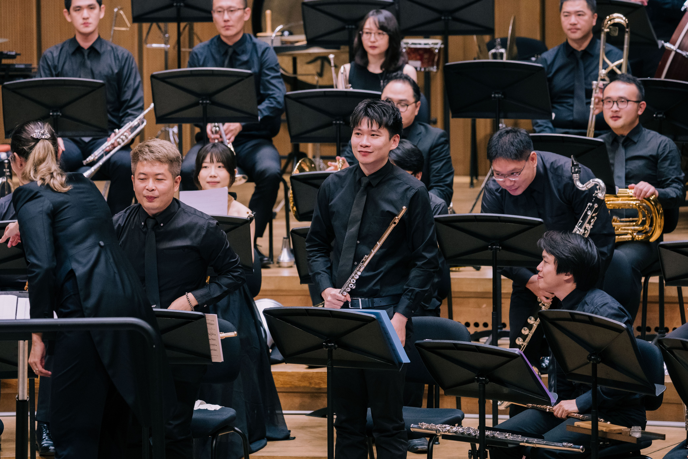
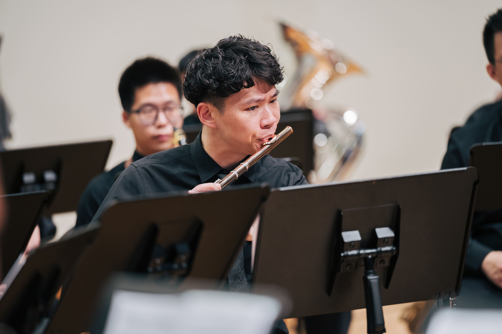

PERFORMANCES
演出足跡
每一次演出，都是與作品、空間與觀眾的一次對話。 從音樂廳、室內樂舞台到教育推廣現場，持續展現長笛音色中細膩而富有層次的表現力。


FEATURED PERFORMANCE
2025
南科教師管樂團《華麗交響》
於管樂團編制中參與演出，透過長笛聲部與整體樂團音響的交織， 展現管樂作品中明亮、流動而富有層次的音色表情。
PERFORMANCE ARCHIVE
演出紀錄
近年參與之演出、室內樂合作與音樂推廣活動。
2026
- 韋瓦笛｜月津港燈節
- 韋瓦笛子團｜總爺藝文中心
- 韋瓦笛｜屏東大成國小
- 《A Day：長笛家的聲音旅程》｜台南市立圖書館新總館・哇劇場
2025
- 全國教師在職進修研習講師｜藝起前進・聲音的魔法工廠
- 艾默士管樂團｜新竹文化局演藝廳
- 艾默士管樂團｜桃園國際管樂節
- 南科教師管樂團《華麗交響》｜台南市文化中心
- 韋瓦笛夏至藝術節｜嘉義昭和十八
2024
- 噶瑪噶居寺新年音樂會
- 韋瓦笛《長笛很有事》｜中原大學風雅頌
- 韋瓦笛｜故宮南院
- 藝術家交響樂團《最終的浪漫》｜台南市文化中心
- 《善感》蔡建緯長笛獨奏會
2023
- 半舞台歌劇晚會《Lust, Liebe & Leidenschaft》｜Dr.-Ernst-Hohner-Konzerthaus
- 蔡建緯畢業長笛獨奏會｜Bundesakademie Trossingen
- 藍乃克長笛協奏曲獨奏會
- 南德巡迴演出《馬太受難曲》
- 韋瓦笛年度音樂會《莫札特很有事》｜台江文化中心